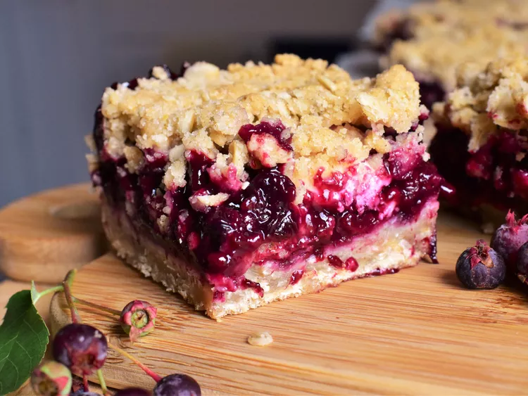

Berry Cream Cheese

This delicious recipe for Saskatoon berries (called serviceberries in some markets) is a cross between a
crisp
and a crumble. The flavor of the Saskatoon berry goes so well with cream cheese. The cake will be a little
crumbly to eat, but it is very delicious!
- 1 ½ cups brown sugar
- 1 ½ cups all-purpose flour
- 1 cup rolled oats
- 1 ½ teaspoons ground cinnamon
- ⅔ cup vegetable oil
Berry Filling:
- 5 cups fresh serviceberries
⅓ cup water
- 2 tablespoons lemon juice
- ¾ cup white sugar
- 2 tablespoons all-purpose flour
- 1 (4 ounce) package cream cheese, diced
- Preheat the oven to 350 degrees F (175 degrees C). Grease an 8-inch square baking pan.
- Make the crust and topping: Whisk brown sugar, flour, oats, and cinnamon together in a bowl.
Gradually
stir
in oil until mixture is crumbly. Press 1/2 of the mixture into the prepared pan for the crust; set
the
rest
aside for the topping.
- Bake crust in the preheated oven until firm, about 10 minutes. Remove from the oven and let cool
slightly;
leave the oven on.
- Make the filling: Bring serviceberries and water to a simmer in a saucepan. Cook for 10 minutes,
then
stir
in lemon juice. Whisk white sugar and flour together in a small bowl; stir sugar mixture into
berries
and
cook until mixture begins to thicken, about 3 minutes. Remove from the heat and let cool for a few
minutes,
then pour over crust.
- Sprinkle cream cheese pieces evenly over filling. Spread reserved crumb mixture over cream cheese
gently
press onto filling with a potato masher.
- Bake in the preheated oven until crumb topping is golden and filling is bubbly, about 40 minutes.